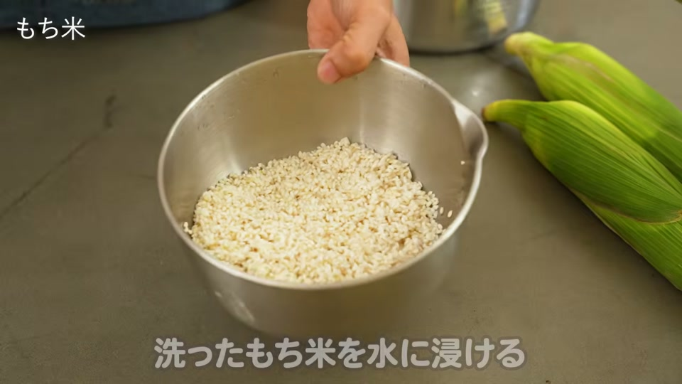

うまさ大爆発‼ フライパン１つで出来る鶏ももとあさりの酒蒸し
ステンレスフライパンでお肉がくっつくお悩みを解決！水滴を使った正しい予熱テクニックと、皮パリパリでジューシーな鶏もも肉とあさりの酒蒸しレシピを紹介します。
料理レシピ・男飯・簡単おうちごはんの最新記事をお届け。毎日の料理がグッと楽しくなるノウハウや調理器具の検証結果を体系的にお届けします。
ステンレスフライパンでお肉がくっつくお悩みを解決！水滴を使った正しい予熱テクニックと、皮パリパリでジューシーな鶏もも肉とあさりの酒蒸しレシピを紹介します。

ダイエット中も安心して食べられる「糸こんにゃくパッタイ」の作り方をご紹介。ナンプラーなどの特別な調味料は一切不要！ご家庭にある醤油やオイスターソースで手軽に作れるヘルシーレシピと、ステンレス鍋で美味しく炒めるコツを解説し...

PFASフリーで注目のコレール（CORELLE）フライパンを、強火で1年間使い続けた耐久実験の結果を解説。焦げ付く原因や寿命を延ばす正しい火加減、フライパン選びの失敗を減らす根本的な解決策まで紹介します。

ステンレス鍋で作る「バター醤油とうもろこしおこわ」のレシピをご紹介。もち米の水加減や火加減、焦げ付かせない蒸らしのコツ、とうもろこしの旨味を最大限に引き出す方法を解説します。

ステンレス鍋のすぐれた熱伝導性と密閉性を活かし、包丁・まな板不要で簡単に作れるおつまみ5品（手羽先の甘辛煮、蒸し枝豆、蒸しトウモロコシ、チルド餃子、焼き椎茸）のレシピや調理のコツを紹介します。
別のカテゴリを選択するか、絞り込みを解除してください。